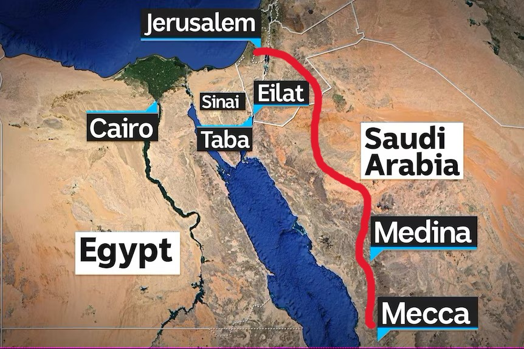
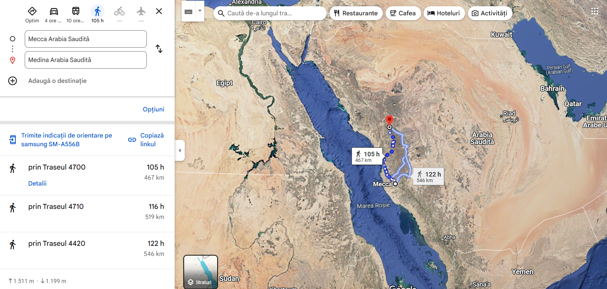
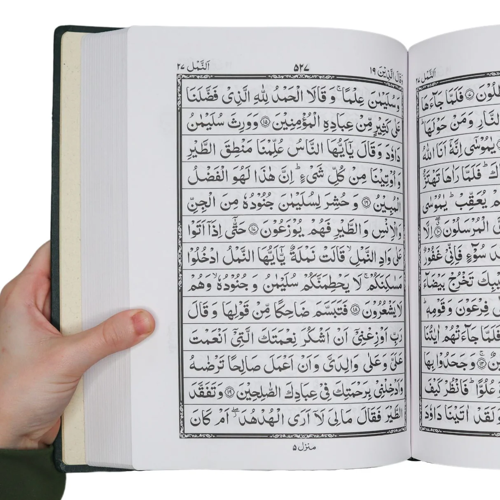
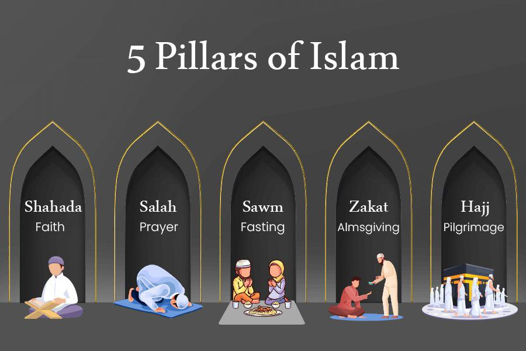
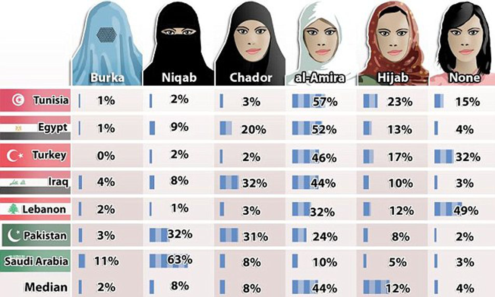
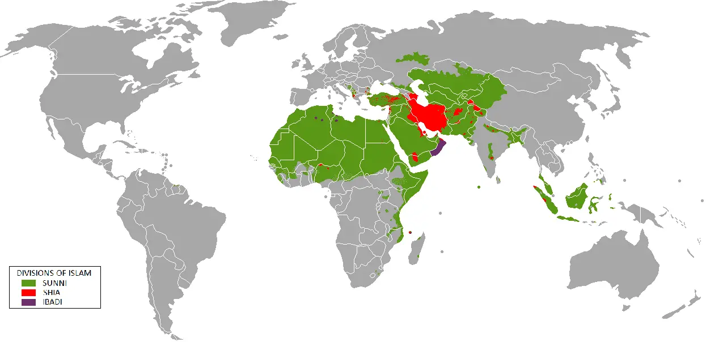

Islamul este a doua mare religie a
lumii, cu peste 1,9 miliarde de credincioși. Numele „islam”
înseamnă „pace și supunere" (față de
Dumnezeu) și provine din cuvântul arab „salam" care înseamnă
"pace". Astăzi vom explora originile, dezvoltarea și principalele
învățături ale acestei religii monoteiste.
Rădăcinile Islamului
Povestea Islamului începe cu Avraam (Ibrahim). Conform tradiției,
Avraam și slujnica Agar au avut un fiu,
Ismail, considerat
strămoșul arabilor. Alungați din casa
lui Avraam, Agar și Ismail au ajuns în
deșertul Peninsulei Arabia, unde
conform tradiției, aproape murind de sete, Ismail a lovit pământul
și a țâșnit un izvor - locul unde se va forma ulterior
orașul Mecca.

Harta călătoriei simbolice de la Canaan spre Peninsula Arabia
Mai târziu, Avraam și Ismail ar fi construit în acest loc
Kaaba (Cubul), un sanctuar dedicat
adorării lui Allah. Dar cu trecerea
timpului sanctuarul a devenit un templu politeist ce a ajuns să
găzduiască peste 360 de idoli.

Sanctuarul Kaaba din Mecca
Viața profetului Mahomed
Mahomed s-a născut într-o familie din
tribul Quraysh, în anul 570. Orfan de
timpuriu, a fost crescut de bunicul și apoi de unchiul său. A lucrat
ca negustor și la 25 de ani s-a căsătorit cu
Khadija, o văduvă bogată care era cu
15 ani mai în vârstă decât el. Au avut şapte copii, cea mai
cunoscută fiind fiica cea mică,
Fatima.
La 40 de ani, în timpul unei rugăciuni
într-o peșteră de lângă Mecca,
Îngerul Gabriel i s-a arătat și i-a
transmis primele revelații divine, în
anul 610. Astfel a început
revelația Coranului, care a continuat
timp de 23 de ani.
Începutul predicării
Mahomed a început să predice noua credință în
piața din Mecca, chemând oamenii la
adorarea unui singur Dumnezeu - Allah.
Primii adepți s-au numit musulmani, adică
"cei care se supun" lui Allah. Liderii
din Mecca, care depindeau financiar de pelerinajele la templele
idolatre, au văzut noua religie ca o amenințare. Acum viața lui
Mahomed era în pericol.

Pelerini musulmani la Mecca
Hegira - momentul crucial
În anul 622, Mahomed și adepții săi au
părăsit Mecca și s-au refugiat în
Yathrib (ulterior redenumit
Medina). Această migrație, numită
Hijra (Hegira), marchează începutul calendarului islamic
(anul 1) și transformarea islamului
într-o comunitate organizată.

Traseul Hijrei: de la Mecca la Medina (anul 622)
La Medina, Mahomed a construit o
moschee și a creat o constituție.
După câțiva ani de conflict cu Mecca și un tratat de pace temporar,
în anul 630, Mahomed a condus o armată
de 10.000 de oameni și a cucerit Mecca
pașnic. Profetul a murit la Medina pe
8 iunie 632, după ce a stabilit toate
detaliile cultului.

Moscheea Profetului din Medina - azi
Succesiunea și expansiunea
Moartea lui Mahomed a adus prima criză majoră pentru comunitatea
musulmană: cine să-i succeadă la conducere? Această dispută a dus la
diviziunea între:
- Sunniți – cei care au considerat că liderul islamului trebuie să fie ales. Ei l-au susținut pe Abu Bakr, unul dintre cei mai vechi parteneri ai Profetului.
- Șiiți – cei care credeau că Ali, vărul și ginerele profetului, și urmașii săi direcți aveau dreptul legitim de a conduce.
În ciuda acestor diviziuni interne, islamul s-a extins cu o viteză
uluitoare în anii următori, datorită unei
forțe militare
extraordinare. În doar un secol după moartea lui Mahomed, imperiul
islamic se întindea
din Spania până în India, devenind cel
mai mare imperiu unificat din lume la acea vreme.

Expansiunea islamică în primele secole după moartea profetului
Mahomed
📖 Cartea sfântă a musulmanilor - Coranul
- Este scris în limba arabă
- Este împărțit în 114 capitole (sura)
- Este considerat ca fiind necreat, coborât din cer lui Mahomed prin Arhanghelul Gavriil

Pagina 4 din Coran, cartea sfântă a musulmanilor

Coranul scris în arabă
🌙 Cei 5 stâlpi ai credinței musulmane
-
🗣️ Mărturisirea de credință
(Shahada)
Nu există alt dumnezeu decât Allah, iar Mahomed este profetul Său.Mărturisirea de credință (Shahada)Este prima frază rostită de cei care se convertesc la islam.
- 🙏 Rugăciunea (Salat) – Se face de cinci ori pe zi, cu fața către Mecca. Credinciosul trebuie să fie curat, să folosească un covoraș de rugăciune și să respecte anumite formule. Chemarea la rugăciune este făcută de muezin din minaretul moscheii.
- 💰 Milostenia (Zakat) – Fiecare musulman oferă o parte din venit celor nevoiași. Este o datorie spirituală și socială, nu doar un act de caritate.
- 🌅 Postul din Ramadan (Sawm) – Timp de o lună, musulmanii se abțin de la mâncare, băutură și relații intime, de la răsărit la apus. Este o practică de autodisciplină și purificare.
- 🕋 Pelerinajul la Mecca (Hajj) – Cei care pot, trebuie să ajungă cel puțin o dată în viață la Mecca, să înconjoare Kaaba și să participe la ritualuri simbolice. După pelerinaj, credinciosul primește titlul de Hajji (pentru bărbați) sau Hajjah (pentru femei).

Cei 5 stâlpi ai Islamului – fundamentele credinței musulmane
🛡️ Jihadul sau războiul sfânt
Un concept important în islam, adesea neînțeles, este cel de
jihad. Termenul înseamnă „efort” sau
„luptă” și are două dimensiuni principale:
- Jihadul mare – lupta interioară a fiecărui musulman împotriva propriilor slăbiciuni.
- Jihadul mic – apărarea comunității musulmane împotriva agresorilor externi.
De-a lungul istoriei, acest concept a fost uneori folosit pentru a
justifica expansiunea militară, deși
Coranul conține atât versete care
încurajează pacea, cât și versete care permit
lupta.
🌅 Viața de după moarte
În islam,
credința în viața de după moarte este
fundamentală. Iată ce cred musulmanii că se întâmplă după moarte:
- Sufletul intră într-o stare intermediară numită barzakh, până la Ziua Judecății.
- La sfârșitul timpurilor, toți oamenii vor fi înviați.
- Faptele fiecăruia vor fi cântărite pe o balanță divină.
- Cei drepți vor intra în Paradis (Jannah), descris ca o grădină perfectă.
- Cei păcătoși vor merge în Iad (Jahannam), un loc de pedeapsă.
🕌 Viața religioasă
- Simbol: Semiluna ☪️
- Centrul religios: orașul Mecca.
- Locașul de cult: moscheea – include sala pentru adunare, amvonul pentru predică și alte spații pentru bibliotecă sau ateliere.
- Ziua de rugăciune: vinerea, zi de rugăciune publică și citire din Coran.
- Conducerea religioasă: în Islam nu există preoți ca intermediari între Dumnezeu și oameni; rugăciunea publică este condusă de o persoană numită iman.
- Autoritatea religioasă: problemele religioase sunt soluționate de muftiu (judecător religios).
🎉 Sărbători
- Sărbătoarea sacrificiului (Bairamul mare) – comemorează gestul profetului Avraam de a fi dispus să-și sacrifice fiul în ascultare de Allah.
- Sărbătoarea de rupere a postului (Bairamul mic) – marchează sfârșitul lunii Ramadan și este un timp al bucuriei, al milosteniei și al rugăciunii.
- Sărbătoarea nașterii Profetului – celebrează nașterea profetului Mahomed, fiind prilej de recitări religioase și comemorare.
- Sărbătoarea nopții destinului – are loc în a 27-a noapte a Ramadanului; potrivit tradiției, în această noapte i-a fost revelat Coranul profetului Mahomed.
👪 Familia și femeia în Islam
În Arabia pre-islamică, femeia avea un
statut inferior: nu avea drept de
moștenire, iar bărbații puteau avea
oricâte soții își doreau.
Coranul și învățăturile lui Mahomed au adus îmbunătățiri:
- Drept la moștenire (mai mic decât al bărbatului)
- Limitarea numărului de soții la patru, cu tratament egal.

Tipuri de vestimentație islamică pentru femei: hijab, niqab,
burka, chador
🤔 Ai știut asta?
Iată câteva informații interesante despre islam:
- ⚖️ Legea Sharia este codul de legi islamice care spune musulmanilor cum să trăiască, bazat pe Coran și învățăturile profetului Mahomed.
- ⚗️ Pedepsele tradiționale includeau tăierea mâinii pentru furt și 80 de lovituri de bici pentru consumul de alcool.
- 👩⚖️ Mărturia unei femei valora jumătate din cea a unui bărbat din cauza diferențelor de educație din acea perioadă.
- 🍖 Islamul interzice carnea de porc, băuturile alcoolice și carnea animalelor moarte natural.
- 🐗 Vânătoarea ca sport este interzisă în Islam, deși vânătoarea pentru hrană este permisă.
- 💫 Superstițiile și vrăjitoria sunt considerate păcate în Islam.
- 🎲 Sunt interzise și jocurile de noroc, împrumuturile cu dobândă, minciuna, bârfa și risipa.
- 🙅♂️ Divorțul fără motiv, maltratarea soției și neascultarea părinților sunt considerate păcate grave.
- 🆘 În situații de urgență, interdicțiile pot fi ridicate temporar - de exemplu, consumul de porc este permis în caz de înfometare extremă.
- 🏦 Deși împrumuturile cu dobândă sunt interzise, musulmanii pot folosi bănci moderne din necesitate practică.
🌍 Islamul în lumea contemporană
Astăzi, islamul este a doua mare
religie a lumii, cu peste 1,9 miliarde de adepți răspândiți pe toate
continentele. Aproximativ 85–90% sunt sunniți, iar
10–15% sunt șiiți. Religia cuprinde o diversitate
de tradiții culturale, de la Maroc până în Indonezia, și include
interpretări variate, de la conservatoare la reformiste.

Distribuția musulmanilor în lume: majorități sunni și șiiți pe
regiuni
Povestea islamului, începută în deșerturile Arabiei cu
Avraam și
Ismail, continuată prin viața
Profetului Mahomed și răspândită prin
expansiunea impresionantă a imperiului islamic, rămâne o narațiune
importantă, modelând viețile a aproape două miliarde de oameni în
lumea contemporană.